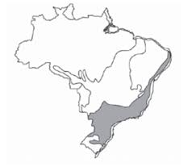
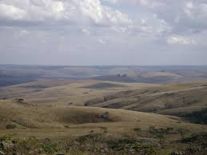
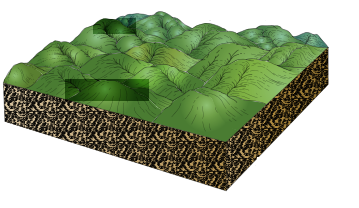
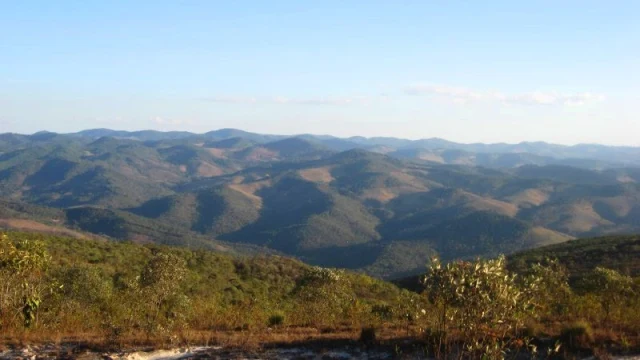

 Variedade da habitats (as colinas e montanhas dos mares de morros podem apresentar diferentes habitats como florestas, campos, matas ciliares, etc.)
Também, contém a presença de raízes profundas e folhas duras e resistentes. Devido a expanção agrícols, a mineração, a urbnização e outras atividades humanas, podem levar a perda de habitat e a sua fragmentação.
 Essa região é quente e úmida, pode ser Tropical úmido ou Tropical de altitude, depende da localidade. Tem alta temperatura e um intenso índice pluviométrico (chuva). Podem apresentar altos índices de precipitação.
Devido as elevações am algumas áreas, eles podem apresentar nevoadas e alta umidade do ar.
 Possuem um relevo acidentado, com áreas de planícies, planaltos e depressões geográficas. Em relação as áreas circundantes que geralmente possuem formato arredondado ou ondulado. Os vales entre as elevações podem ser profundos e estreitos formando desfiladeiros o ravinas.
Solo com grande fertildade e serras erodidas pelas chuva.
 O solo desse clima é formado a partir de rochas sedimentares, ígneas ou metamórficas, que passam por processos de inteperismo, dando origem a um solo rico em nutrientes e matéria orgânica. Tem também, a presença de colinas, montanhas e uma permeabilidade. No entanto, a ocupação humana podee levar à degradação desse solo um tanto único.